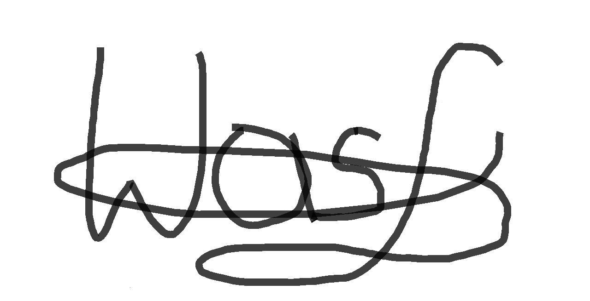

Łukasz Wasilewski
PROGRAMISTA W JĘZYKU PYTHON
O mnie
Jestem Początkującym Programistą rozpoczynającym swoją podróż w świecie programowania.
Cześć! Po kilkunastu latach pracy jako projektant mostowy postanowiłem coś zmienić w swoim dotychczasowym życiu zawodowym. Wybrałem dla siebie drogę w branży programowania. Uważam, że jest to bardzo rozwojowa dziedzina, która wymaga kreatywnosći i analitycznego myślenia. Uczucie stworzenie czegoś nowego i użytecznego dla innych musi być czymś bardzo przyjemnym, a zarazem motywującym do dlaszego działania, dlatego właśnie chciałbym zostać programistą.
Uważam, że moje dotychczasowe doświadczenie wyniesione ze studiowania na Politechnice Warszawskiej oraz pracy w charakterze projektanta pozwolą mi na szybkie i płynne wejście do nowego zawodu.
